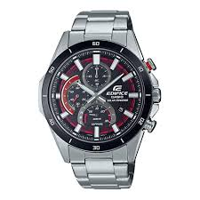
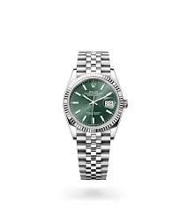
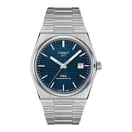

CASIO SAATLER
Saat Açıklaması: Yüksek kaliteli malzemelerden üretilmiş, su geçirmez CASIO RG-1234 modeli.
- Fiyat: 5.000 TL
- Marka: CASIO
- Model: RG-1234
- Materyal: Çelik
- Konum: Balıkesir
SWATCH SAATLER

Saat Açıklaması: Şık ve renkli tasarımıyla dikkat çeken Swatch modeli, her yaşa uygun bir seçenek.
- Fiyat: 3.500 TL
- Marka: Swatch
- Model: Color Burst
- Materyal: Plastik
- Konum: Balıkesir
ROLEX SAATLER
Saat Açıklaması: Lüks ve prestijli Rolex modeli, şıklığı ve dayanıklılığıyla bilinir.
- Fiyat: 25.000 TL
- Marka: Rolex
- Model: Submariner
- Materyal: Çelik
- Konum: Balıkesir
TİSSOT SAATLER
Saat Açıklaması: Tissot'un zarif ve şık tasarımı, kalitesiyle bilinen bir model.
- Fiyat: 7.500 TL
- Marka: Tissot
- Model: T-Classic Metaryel: Çelik
- Konum: Balıkesir